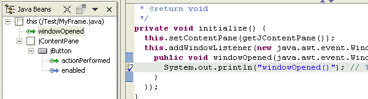
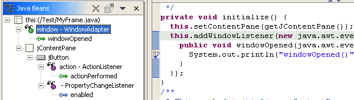
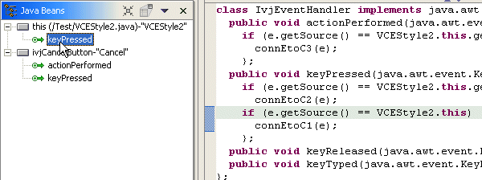

When you select an event in the Java Beans view, the Source view
shows the relevant lines in the Java code.
To show the source for an event, select the event in the Java Beans
view. - When an event is selected, the source code statements for the callback
method on the listener are shown.

- When a listener is selected in Expert Events mode,
the source code statement that adds the listener to the source is shown.

- If the listener is shared (so the callback method can be used by more
than one component), selection will point to the relevant block of code responsible
for processing the event's parent component. The following image shows that
the single inner class IvjEventHandler is used by both the class itself (this)
and by a Cancel button. The keyPressed method has if blocks
within the keyPressed(java.awt.event.KeyEvent) callback method
to separate the logic processed when each button is pressed.
